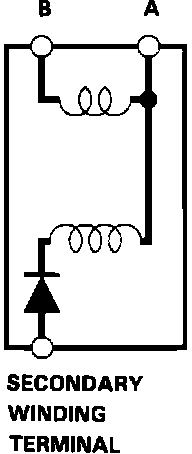

Ignition Coil: Testing and Inspection
Secondary Winding Circuit:

1. With the Ignition switch OFF, remove the ignition coil.
Ignition Coil:

2. Using an ohmmeter, measure the primary winding resistance between the A and B terminals.
Resistance: 0.9 - 1.1 ohms
NOTE: ^ Resistence will vary with the coil temperature; specification is at 77~F (25~C).
^ If the resistance is not within specification, replace the coil.
^ If the resistance is OK, but other troubleshooting doesn't reveal the cause of the problem, substitute a known-good ignition coil and check engine operation again. If the engine then runs OK, replace the original coil.